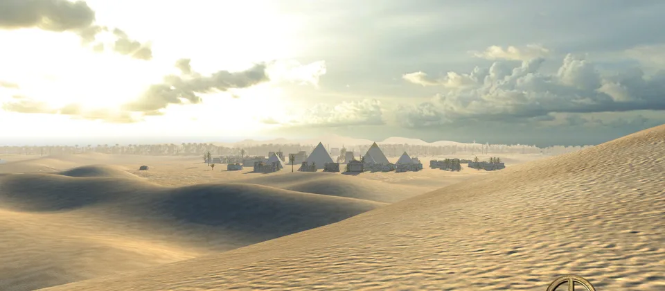

Keep workers busy
Idle workers slow everything down.
0 A.D.
0 A.D. is a free open-source RTS about ancient warfare, economy, and battles.
Download 0 A.D.
Basics
RTS
Idle workers slow everything down.
Knowing the map helps you expand safely.
Small attacks usually lose to a prepared army.